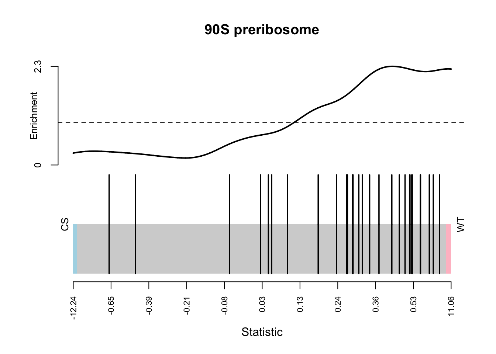

Chapter 4 scRNA-seq data
4.1 Background
As discussed previously 2.1.2, processed counts from the scRNA-seq workshop are used here to demonstrate the different types of figures that can be generated for publications.
4.2 tSNE plots
t-distributed stochastic neighbor embedding (t-SNE) is a statistical method for visualizing high-dimensional data by giving each data point a location in a two or three-dimensional map. It is a dimensionality reduction technique which is a way to graphically simplify very large datasets.
library(Seurat)## Attaching SeuratObject## Attaching splibrary(ggplot2)
load("Counts_scRNA-norm.RData")DimPlot(
counts_st,
reduction = "tsne",
label = T,
size = 0.5,
repel = T,
cols = DiscretePalette(length(levels(Idents(
counts_st
))))
)
DimPlot(
counts_st,
reduction = "tsne",
label = T,
group.by = "Sample",
size = 0.5,
repel = T
)4.3 uMAP
Optionally, we can also perform dimension reductionality reduction using Uniform Manifold Approximation and Projection (UMAP). UMAP is a dimension reduction technique that can be used for visualization similarly to t-SNE, but also for general non-linear dimension reduction.
DimPlot(
counts_st,
reduction = "umap",
label = T,
size = 0.5,
repel = T,
cols = DiscretePalette(length(levels(Idents(
counts_st
))))
)DimPlot(
counts_st,
reduction = "umap",
label = T,
group.by = "Sample",
size = 0.5,
repel = T
)+ggtitle("")
To identify differentially expressed genes between clusters we can use the FindMarker function in Seurat. As an example, DE genes between clusters 0 and 1 are computed below.
DE.cluster0_1 <- FindMarkers(
counts_st,
ident.1 = 0,
ident.2 = 1,
verbose = F)
head(DE.cluster0_1[order(abs(DE.cluster0_1$avg_log2FC),
decreasing = T),])## p_val avg_log2FC pct.1 pct.2 p_val_adj
## CD74 0.000000e+00 -5.891577 0.008 1.000 0.000000e+00
## IGHM 0.000000e+00 -5.729445 0.000 0.998 0.000000e+00
## S100A6 0.000000e+00 5.598281 1.000 0.047 0.000000e+00
## TMSB4X 1.657565e-278 -4.911549 0.970 1.000 2.935713e-274
## CCL3 6.580286e-308 -4.861987 0.000 0.945 1.165434e-303
## KRT81 4.273972e-296 4.593045 0.962 0.000 7.569632e-2924.4 Heatmaps
Marker genes which can be used to uniquely identify each of the clusters are identified using the FindAllMarkers function.
library(dplyr)
all.markers %>%
group_by(cluster) %>%
slice_max(n = 5, order_by = avg_log2FC)## # A tibble: 35 × 7
## # Groups: cluster [7]
## p_val avg_log2FC pct.1 pct.2 p_val_adj cluster gene
## <dbl> <dbl> <dbl> <dbl> <dbl> <fct> <chr>
## 1 1.61e-155 1.23 0.94 0.525 2.86e-151 0 IGFBP3
## 2 4.07e- 65 1.17 0.417 0.149 7.21e- 61 0 IGFBP5
## 3 2.12e-147 1.06 0.998 0.714 3.75e-143 0 TPM1
## 4 2.31e-202 0.938 0.994 0.869 4.09e-198 0 CSNK2B
## 5 1.78e-131 0.901 0.998 0.665 3.15e-127 0 TPM2
## 6 0 4.79 0.998 0.021 0 1 IGHM
## 7 0 4.63 1 0.037 0 1 CD74
## 8 0 4.22 0.945 0.015 0 1 CCL3
## 9 0 4.08 1 0.959 0 1 TMSB4X
## 10 0 3.48 0.999 0.033 0 1 HLA-DRA
## # … with 25 more rows
## # ℹ Use `print(n = ...)` to see more rowstop10.markers<-all.markers %>%
group_by(cluster) %>%
slice_max(n = 10, order_by = avg_log2FC)DoHeatmap(counts_st, features = top10.markers$gene)
4.5 Feature plots
We can also highlight the expression of genes of interest on the clusters by way of a tSNE plot.
#Get the top marker gene per cluster
top.markers<-all.markers %>%
group_by(cluster) %>%
slice_max(n = 1, order_by = avg_log2FC)FeaturePlot(
counts_st,
features = top.markers$gene,
ncol = 3,
label = T,
reduction = "tsne"
)
Alternatively, we can also use violin plots or boxplots to show the expression profile of genes of interest across cells by cluster or any other combination of cells
VlnPlot(counts_st,
features = top.markers$gene,
cols = DiscretePalette(length(unique(
counts_st$seurat_clusters
))))
par(mfrow = c(3, 3))
for (n in top.markers$gene)
{
n.data <- counts_st[n, ]
boxplot(
as.numeric(n.data@assays$RNA@data) ~ as.character(n.data$seurat_clusters),
col = DiscretePalette(length(unique(
counts_st$seurat_clusters
))),
xlab = "Cluster",
ylab = "Expression Level",
main = n
)
}4.6 Cell annotation
An unbiased cell type recognition is performed using SingleR. celldex has a range of annotations derived from Bulk RNA-seq data that can be used to annotate the identified clusters above. Here, we use the Human Primary Cell Atlas database as an example.
library(SingleR)
library(SingleCellExperiment)cell.sce<- as.SingleCellExperiment(counts_st)
annot<-celldex::HumanPrimaryCellAtlasData()
cell.annots <- SingleR(
test = cell.sce,
ref = annot,
clusters = cell.sce$seurat_clusters,
labels = annot$label.main)
cell.annots.fine<-SingleR(
test = cell.sce,
ref = annot,
clusters = cell.sce$seurat_clusters,
labels = annot$label.fine)
save(cell.annots,cell.annots.fine,file = "Annotations.RData")counts_st <-
AddMetaData(counts_st, cell.annots[match(counts_st@meta.data$seurat_clusters,rownames(cell.annots)), "labels"], "Annot.main")library(ggplot2)DimPlot(
counts_st,
reduction = "tsne",
group.by = "Annot.main",
label = T,
repel = T,
pt.size = 0.1,
)+ggtitle(label = "")
counts_st <- AddMetaData(counts_st, cell.annots.fine[match(counts_st@meta.data$seurat_clusters, rownames(cell.annots.fine)), "labels"], "Annot.fine")DimPlot(
counts_st,
reduction = "tsne",
group.by = "Annot.fine",
label = T,
repel = T,
pt.size = 0.1
) + ggtitle(label = "")
4.7 Trajectory analysis
Pseudotime is a measure of how much progress an individual cell has made through a process such as cell differentiation.
Pseudotime analysis of the cells identified in the dataset was performed using Monocle2.
mono2.learn.traject <-
function(X_counts,
these.cell.types) {
library(monocle) # It has to be Monocle 2.
rds.fname <-"Trajectory-cds.rds"
gsndf <- data.frame(gene_short_name = rownames(X_counts))
csndf <- data.frame(cell.type = these.cell.types)
rownames(gsndf) <- rownames(X_counts)
rownames(csndf) <- colnames(X_counts)
pd <- new("AnnotatedDataFrame", data = csndf)
fd <- new("AnnotatedDataFrame", data = gsndf)
cds <-
newCellDataSet(
X_counts,
phenoData = pd,
featureData = fd,
expressionFamily = negbinomial.size()
)
return(cds)
cds <- estimateSizeFactors(cds)
cds <- estimateDispersions(cds)
cds <- detectGenes(cds, min_expr = 0.1)
disp_table <- dispersionTable(cds)
ordering_genes <- subset(disp_table, mean_expression >= 0.1)
cds <- setOrderingFilter(cds, ordering_genes)
cds <- reduceDimension(cds)
saveRDS(cds , rds.fname)
}mono2.learn.traject(
X_counts <- as.matrix(counts_st@assays$RNA@counts),
these.cell.types <- counts_st[[]]$seurat_clusters
)mono.rds <-readRDS("Trajectory-cds.rds")
mono.Tree <- t(mono.rds@reducedDimS)do.Traj.lines <- function(traj) {
for (i in 1:length(traj@minSpanningTree[[]])) {
p1no <- unlist(traj@minSpanningTree[[i]])[1]
p2no <- unlist(traj@minSpanningTree[[i]])[2]
lines(
c(traj@reducedDimK[1, p1no],
traj@reducedDimK[1, p2no]),
c(traj@reducedDimK[2, p1no],
traj@reducedDimK[2, p2no]),
lwd = 2
)
}
}clusters <- counts_st[[]]$seurat_clusters
cols.traj <- c("red", "green", "blue","orange","purple","pink")
traj.cols <- cols.traj[clusters]
plot(
mono.Tree,
cex = 0.7,
pch = 16,
bg = traj.cols,
col = traj.cols,
xlab = "Component 1",
ylab = "Component 2",
cex.axis = 0.8,
cex.lab = 0.9
)
do.Traj.lines(mono.rds)
legend(
"bottomright",
legend = levels(clusters),
pch = 16,
col = cols.traj,
bty = "n"
)
Session info
sessionInfo()## R version 4.2.0 (2022-04-22)
## Platform: x86_64-apple-darwin17.0 (64-bit)
## Running under: macOS Big Sur/Monterey 10.16
##
## Matrix products: default
## BLAS: /Library/Frameworks/R.framework/Versions/4.2/Resources/lib/libRblas.0.dylib
## LAPACK: /Library/Frameworks/R.framework/Versions/4.2/Resources/lib/libRlapack.dylib
##
## locale:
## [1] en_AU.UTF-8/en_AU.UTF-8/en_AU.UTF-8/C/en_AU.UTF-8/en_AU.UTF-8
##
## attached base packages:
## [1] stats4 stats graphics grDevices utils datasets methods
## [8] base
##
## other attached packages:
## [1] SingleCellExperiment_1.18.0 SingleR_1.10.0
## [3] SummarizedExperiment_1.26.1 Biobase_2.56.0
## [5] GenomicRanges_1.48.0 GenomeInfoDb_1.32.2
## [7] IRanges_2.30.0 S4Vectors_0.34.0
## [9] BiocGenerics_0.42.0 MatrixGenerics_1.8.1
## [11] matrixStats_0.62.0 dplyr_1.0.9
## [13] ggplot2_3.3.6 sp_1.5-0
## [15] SeuratObject_4.1.0 Seurat_4.1.1
##
## loaded via a namespace (and not attached):
## [1] VGAM_1.1-7 plyr_1.8.7
## [3] igraph_1.3.4 lazyeval_0.2.2
## [5] splines_4.2.0 BiocParallel_1.30.3
## [7] listenv_0.8.0 scattermore_0.8
## [9] fastICA_1.2-3 digest_0.6.29
## [11] htmltools_0.5.3 viridis_0.6.2
## [13] fansi_1.0.3 magrittr_2.0.3
## [15] ScaledMatrix_1.4.0 tensor_1.5
## [17] cluster_2.1.3 ROCR_1.0-11
## [19] limma_3.52.2 globals_0.15.1
## [21] docopt_0.7.1 spatstat.sparse_2.1-1
## [23] colorspace_2.0-3 ggrepel_0.9.1
## [25] xfun_0.31 sparsesvd_0.2
## [27] RCurl_1.98-1.8 jsonlite_1.8.0
## [29] progressr_0.10.1 spatstat.data_2.2-0
## [31] survival_3.3-1 zoo_1.8-10
## [33] glue_1.6.2 polyclip_1.10-0
## [35] gtable_0.3.0 zlibbioc_1.42.0
## [37] XVector_0.36.0 leiden_0.4.2
## [39] DelayedArray_0.22.0 BiocSingular_1.12.0
## [41] future.apply_1.9.0 abind_1.4-5
## [43] scales_1.2.0 pheatmap_1.0.12
## [45] DBI_1.1.3 spatstat.random_2.2-0
## [47] miniUI_0.1.1.1 Rcpp_1.0.9
## [49] viridisLite_0.4.0 xtable_1.8-4
## [51] reticulate_1.25 spatstat.core_2.4-4
## [53] rsvd_1.0.5 htmlwidgets_1.5.4
## [55] httr_1.4.3 RColorBrewer_1.1-3
## [57] ellipsis_0.3.2 ica_1.0-3
## [59] pkgconfig_2.0.3 farver_2.1.1
## [61] sass_0.4.2 uwot_0.1.11
## [63] deldir_1.0-6 utf8_1.2.2
## [65] tidyselect_1.1.2 labeling_0.4.2
## [67] rlang_1.0.4 reshape2_1.4.4
## [69] later_1.3.0 munsell_0.5.0
## [71] tools_4.2.0 cachem_1.0.6
## [73] cli_3.3.0 generics_0.1.3
## [75] ggridges_0.5.3 evaluate_0.15
## [77] stringr_1.4.0 fastmap_1.1.0
## [79] yaml_2.3.5 goftest_1.2-3
## [81] knitr_1.39 fitdistrplus_1.1-8
## [83] DDRTree_0.1.5 purrr_0.3.4
## [85] RANN_2.6.1 sparseMatrixStats_1.8.0
## [87] pbapply_1.5-0 future_1.27.0
## [89] nlme_3.1-158 mime_0.12
## [91] slam_0.1-50 monocle_2.24.1
## [93] ggrastr_1.0.1 compiler_4.2.0
## [95] rstudioapi_0.13 beeswarm_0.4.0
## [97] plotly_4.10.0 png_0.1-7
## [99] spatstat.utils_2.3-1 tibble_3.1.8
## [101] bslib_0.4.0 stringi_1.7.8
## [103] highr_0.9 rgeos_0.5-9
## [105] lattice_0.20-45 Matrix_1.4-1
## [107] HSMMSingleCell_1.16.0 vctrs_0.4.1
## [109] pillar_1.8.0 lifecycle_1.0.1
## [111] combinat_0.0-8 spatstat.geom_2.4-0
## [113] lmtest_0.9-40 jquerylib_0.1.4
## [115] BiocNeighbors_1.14.0 RcppAnnoy_0.0.19
## [117] data.table_1.14.2 cowplot_1.1.1
## [119] bitops_1.0-7 irlba_2.3.5
## [121] httpuv_1.6.5 patchwork_1.1.1
## [123] R6_2.5.1 bookdown_0.27
## [125] promises_1.2.0.1 KernSmooth_2.23-20
## [127] gridExtra_2.3 vipor_0.4.5
## [129] parallelly_1.32.1 codetools_0.2-18
## [131] MASS_7.3-58.1 assertthat_0.2.1
## [133] leidenbase_0.1.11 withr_2.5.0
## [135] qlcMatrix_0.9.7 sctransform_0.3.3
## [137] GenomeInfoDbData_1.2.8 mgcv_1.8-40
## [139] parallel_4.2.0 beachmat_2.12.0
## [141] grid_4.2.0 rpart_4.1.16
## [143] tidyr_1.2.0 DelayedMatrixStats_1.18.0
## [145] rmarkdown_2.14 Rtsne_0.16
## [147] shiny_1.7.2 ggbeeswarm_0.6.0